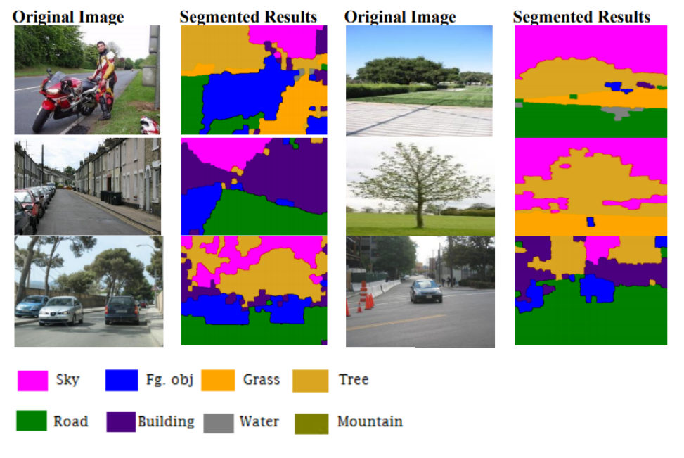

Labelling a scene by looking at small patches and their neighbours
Scene labelling means giving every part of a photo a name such as sky, tree, grass or road. Most deep-learning methods do this one pixel at a time, and a single pixel says very little about what it belongs to. We worked with superpixels instead, and gave each one a look at its neighbours. Three small networks each classified every patch, and a merging step combined their answers into a result that compares well with other published methods on the same dataset.
Why superpixels
A superpixel is a small patch of neighbouring pixels that look alike and are grouped together. An image ends up with far fewer patches than pixels. We used an algorithm called SLIC to cut each image up, because it is fast and its patches follow object edges well.
The number of patches is set by a quantity we call the minimum object resolution. We fixed it at roughly 20×20 pixels. Over the whole dataset this gave 291,911 superpixels. Classifying a patch is much cheaper than classifying every pixel, and a patch shows texture, which a single pixel cannot.
Adding context
A patch on its own can still be ambiguous, because similar-looking patches can belong to different classes. What surrounds the patch carries extra information. So for each superpixel we built three inputs. The first is the patch alone. The second adds its immediate neighbours, and the third adds the neighbours of those neighbours.

We trained a separate convolutional neural network for each of the three inputs. A convolutional network is a stack of small learned filters that pick out patterns in an image. Ours were deliberately small: two layers of filters, one fully connected layer of 256 units, and an output that gives a probability for each of the 8 classes. The input sizes were 24×24, 32×32 and 48×48 pixels, chosen by performance on validation images.

Combining the three answers
We tried three ways of merging. Max-voting takes the class that most networks choose. A weighted average blends the probabilities, trusting each network according to how well it did in training. The third uses the Dempster-Shafer theory of evidence. Instead of one probability per class, it deals with belief spread over groups of classes. We estimated this from the confusion matrix, the table of which classes a network mixed up during training, so that a patch can carry some belief for a class that is often confused with its top choice.
What we found
We used the ICCV09 dataset: 715 photos with 8 classes, split into 500 for training, 72 for validation and 143 for testing. The three networks alone scored almost the same: 72.32% for the patch alone, 72.45% with first neighbours and 72.24% with second neighbours (Table 1). From that you might think the neighbours add nothing. Combining them showed otherwise.
Dempster-Shafer gave 77.07% and max-voting 72.88% (Table 2). The weighted average and Dempster-Shafer were close, and each came out ahead on some classes. On this dataset our result of 77.14% was above the pixel-based CRF baseline (74.3%), the CNN plus superpixel method of Farabet et al. (74.56%) and three other published methods (76.3% to 76.9%) (Table 3). Testing took 25 to 30 milliseconds on a GTX 1080 graphics card, which the paper takes as enough for real-time use.

Results in more detail
First the three single networks. Table 1 shows what each one looks at, how big its input is, how it is built and its test accuracy. The labels 0N, 1N and 2N stand for the patch alone, the patch with its first neighbours and the patch with its second neighbours. In the architecture code, nCk means n filters of size k×k, mP means max-pooling over an m×m window, and FCp means a fully connected layer with p units. The networks that see neighbours use larger filters, 7×7 and 5×5, than the one that sees the patch alone, 5×5 and 3×3.
| Input | Input size | Network architecture | Test accuracy (%) |
|---|---|---|---|
| 0N | 24 × 24 | 32C5-2P-64C3-2P-FC256 | 72.32 |
| 1N | 32 × 32 | 32C7-2P-64C5-2P-FC256 | 72.45 |
| 2N | 48 × 48 | 32C7-2P-64C5-2P-FC256 | 72.24 |
The three scores are almost the same. As we wrote in the paper, it may seem that the choice of neighbours makes no difference, but the ensembles show a different story.
Table 2 gives accuracy class by class for the three ways of merging. The paper prints it with the classes as columns. Here the classes are rows so that it fits the page. Each cell is the test accuracy for that class, and the last row is the average accuracy.
| Class | Dempster–Shafer | Max-voting | Weighted average |
|---|---|---|---|
| Sky | 88.07 | 84.05 | 87.75 |
| Tree | 76.74 | 73.37 | 77.17 |
| Grass | 80.29 | 73.65 | 79.69 |
| Ground | 86.59 | 80.80 | 85.43 |
| Building | 77.8 | 69.90 | 75.85 |
| Mountain | 2.56 | 4.15 | 4.16 |
| Water | 59.41 | 63.90 | 64.69 |
| Object | 59.18 | 60.79 | 63.24 |
| Average | 77.07 | 72.88 | 77.14 |
Dempster–Shafer is ahead on sky, grass, ground and building, and the weighted average is ahead on tree, mountain, water and object. On the average the two are close, 77.14 against 77.07. Max-voting trails on the average, though it beats Dempster–Shafer on water and on foreground objects. In the Dempster–Shafer step we only gave extra belief to pairs of classes that the network often mixes up, because larger groups of classes added computation without adding much information. The weighted average used each network's training performance as its weight, and in max-voting a tie went to the prediction with the highest score.
The last table sets our weighted average beside five earlier methods tested on the same ICCV09 dataset. Each is described by the paper in a word or two: the ICCV 2009 baseline is a pixel-level conditional random field (pixel CRF), and the others use region-based energy, a probabilistic model, a CNN with superpixels, and features with superpixels.
| Approach | Methodology | Accuracy (%) |
|---|---|---|
| Baseline (ICCV 09) [7] | Pixel CRF | 74.3 |
| Gould et al. (ICCV 09) [7] | Region-based energy | 76.4 |
| Munoz et al. (ECCV 10) [11] | Probabilistic model | 76.9 |
| Farabet et al. (PAMI 13) [6] | CNN + superpixel | 74.56 |
| Tighe et al. (ECCV 10) [17] | Features + superpixel | 76.3 |
| Our approach | Superpixel + CNN + ensemble | 77.14 |
Our 77.14% is the highest number in the table. The closest are Munoz et al. at 76.9% and Gould et al. at 76.4%. Farabet et al., who also combined a CNN with superpixels, got 74.56%. Figure 3 shows some of our outputs.
Discussion
We conclude that superpixel-level labelling with small networks is a fast way to create decent segments, and that on ICCV09 it compares well with the methods in Table 3. The single networks all performed at almost the same level, so it was the merging step that brought the improvement.
We also wanted to deal with uncertainty. A network gives poor predictions on some superpixels, for reasons that include a skewed dataset, similar-looking patches from different classes and wrong ground-truth labels. That is why we tried the Dempster–Shafer theory, which reached 77.07%, almost as good as the weighted average at 77.14% (Table 2).
The limits are clear in Table 2. The mountain class almost failed, at 2.56% with Dempster–Shafer and about 4% with the others. Mountain segments are scarce in the dataset, so the networks had little to learn from. Water and foreground objects were also weaker than sky or ground. We tested only on ICCV09.
Taken together, we believe the speed of the algorithm and the relatively small size of the networks make it promising. Testing took 25 to 30 milliseconds on a GTX 1080 graphics card, which we took as meeting real-time needs. In future we think the work could be extended to video segmentation.
Sources
The figures and tables listed here are taken from the paper cited at the top of this page; the numbers quoted in the text come from it too.
- Figures: Fig. 2, Fig. 1, Fig. 3
- Tables: Table 1: test accuracy of the three single networks; Table 2: accuracy of the three ensemble methods, per class and on average; Table 3: our result next to other published methods on ICCV09
Acknowledgements
This work is partially supported by the project entitled “Development of knowledge graph from images using deep learning”, sponsored by SERB (Government of India, order no. SB/S3/EECE/054/2016, dated 25/11/2016), and carried out at the Centre for Microprocessor Application for Training Education and Research, CSE Department, Jadavpur University.
Cite the paper
A Das, Swarnendu Ghosh, R Sarkhel, S Choudhuri, N Das, M Nasipuri (2018). Combining multilevel contexts of superpixel using convolutional neural networks to perform natural scene labeling. Recent Developments in Machine Learning and Data Analytics (IC3), pp. 297–306 · Springer.
@inproceedings{das2018combining,
author = {Das, A and Ghosh, Swarnendu and Sarkhel, R and Choudhuri, S and Das, N and Nasipuri, M},
title = {Combining multilevel contexts of superpixel using convolutional neural networks to perform natural scene labeling},
booktitle = {Recent Developments in Machine Learning and Data Analytics (IC3)},
pages = {297--306},
publisher = {Springer},
year = {2018},
doi = {10.1007/978-981-13-1280-9_28}
}